慶應SFC隣接の学生寮 H Village。
住環境が態度・価値観に与える影響を縦断調査で解明する。
H Village は男子寮・女子寮・共学寮（同一フロア型・フロア分離型）の4棟が共存するユニークな学生寮です。
同じキャンパスに通い、同じ大学に所属しながら、寮生たちは住む建物によって異なる態度や価値観を示します。私たちは「なぜそうなるのか」を科学的に解明するため、2025年度から縦断的な調査研究を開始しました。
初年度は153名のデータから、回答パターンの違いが性別ではなく建物という社会単位に紐づくことを発見。2026年度はメンバーを7人に拡大し、建物文化の形成メカニズムに迫ります。
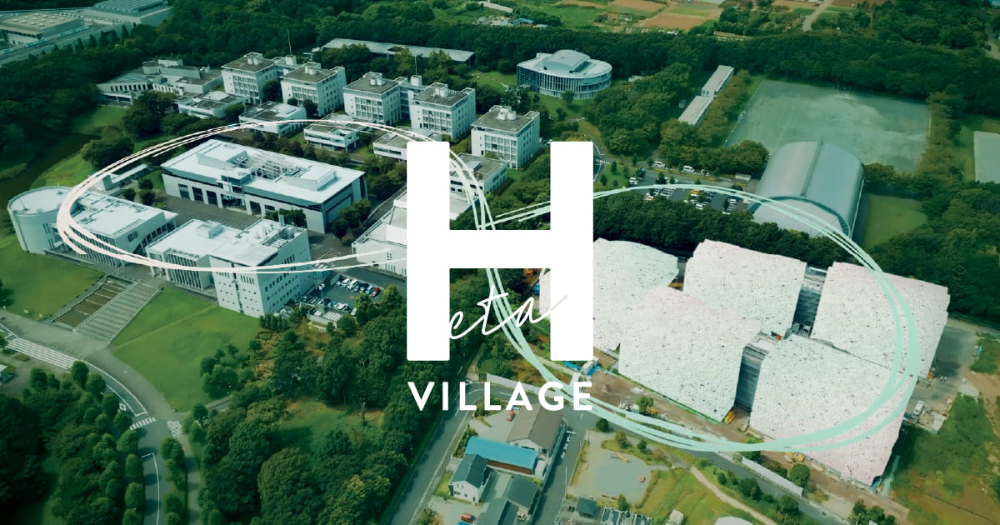
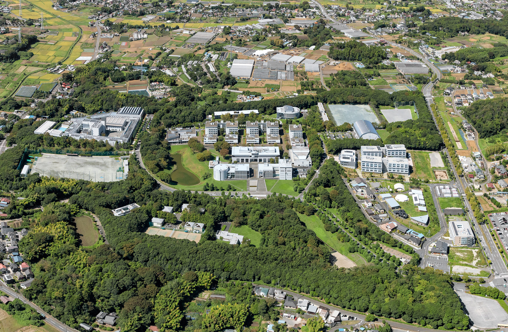
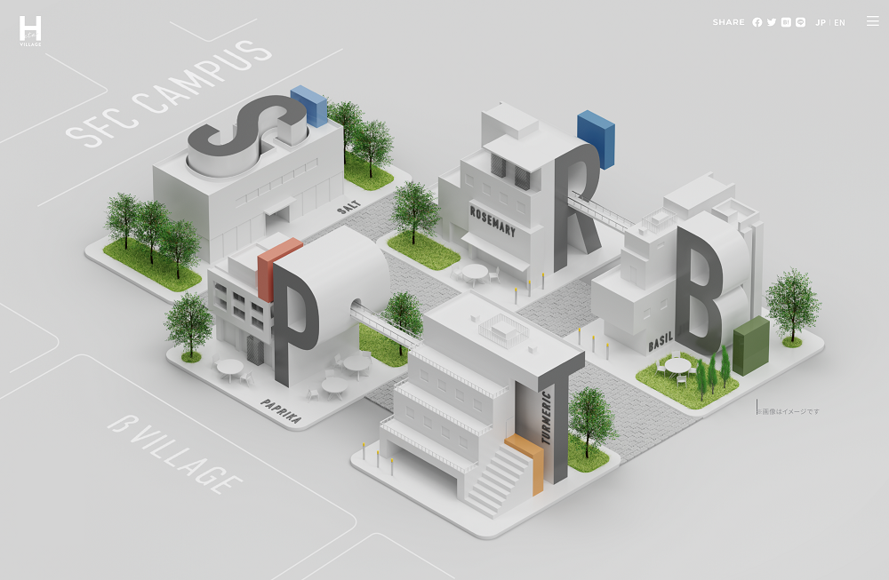
男性のみが居住する棟。独自のコミュニティ文化が形成される。
Male Only女性のみが居住する棟。比較対照として重要な役割を持つ。
Female Only男女がフロアごとに分かれて居住する混合棟。
Co-ed / Separated男女が同一フロアに居住。最も混合度が高い棟。
Co-ed / Mixed回答パターンの違いは性別ではなく、建物という社会単位に紐づいていた。
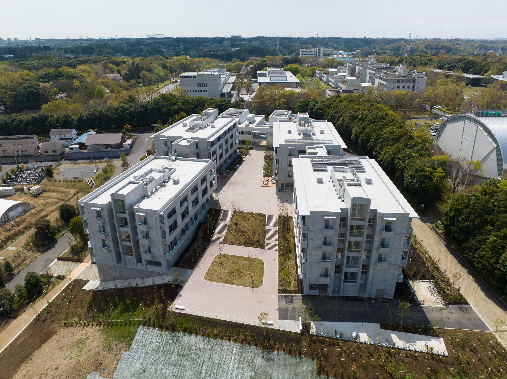
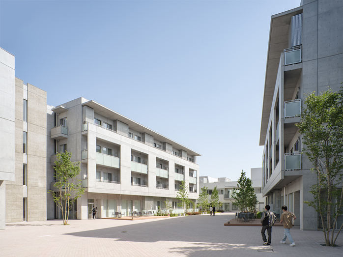
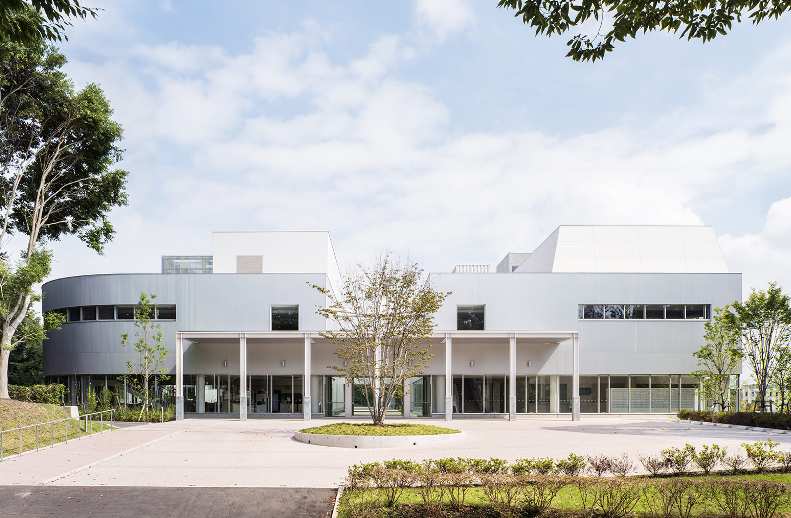
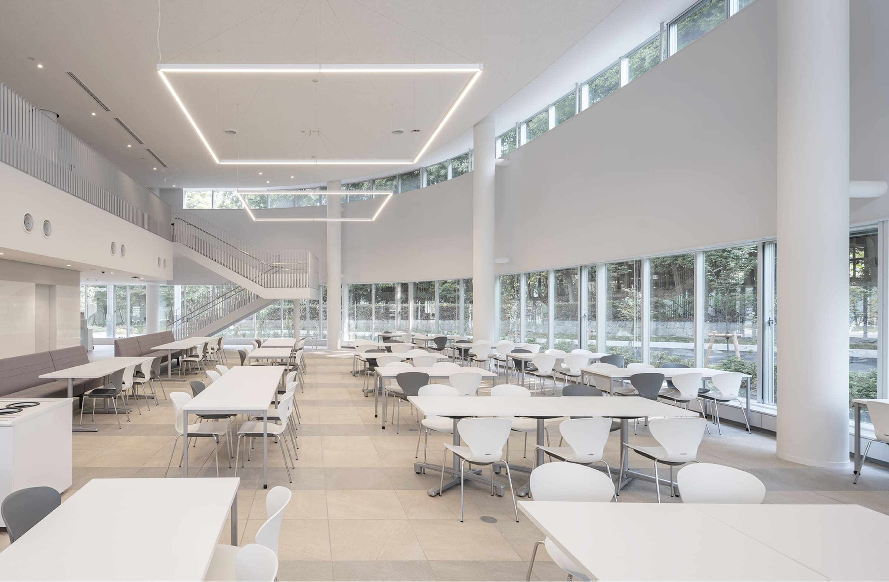
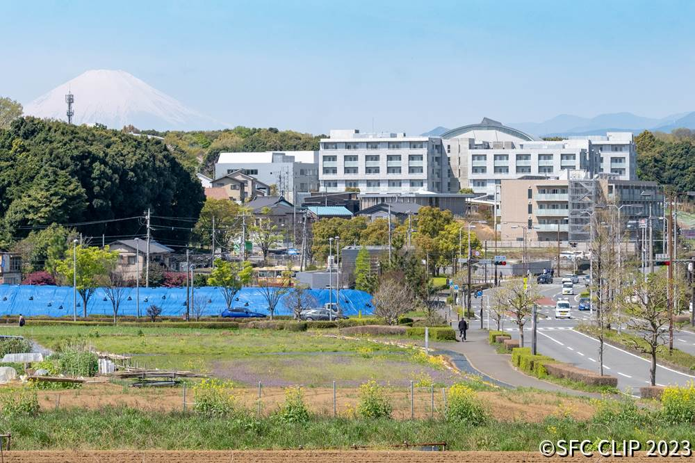
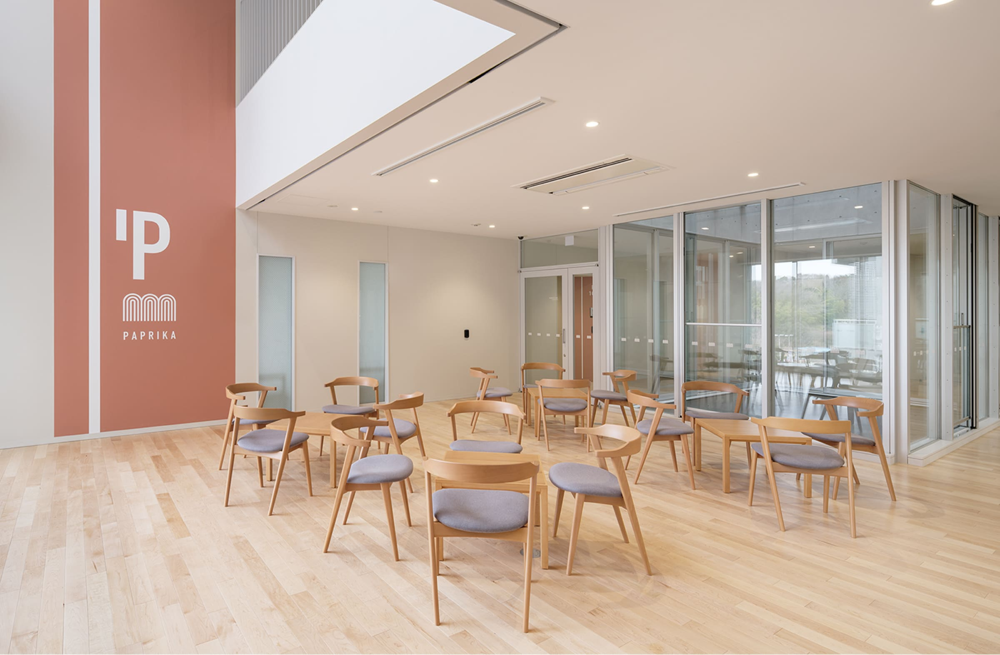
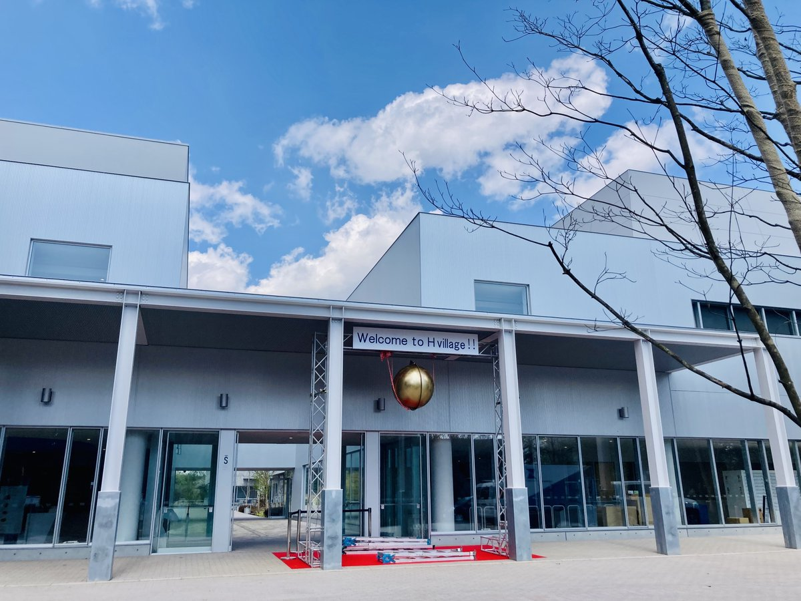
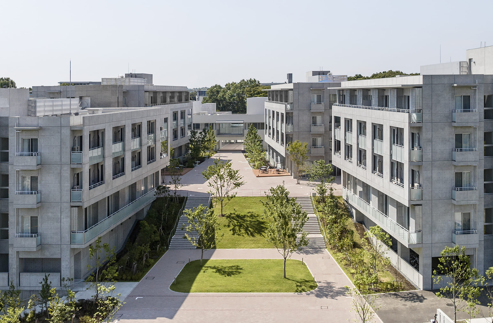
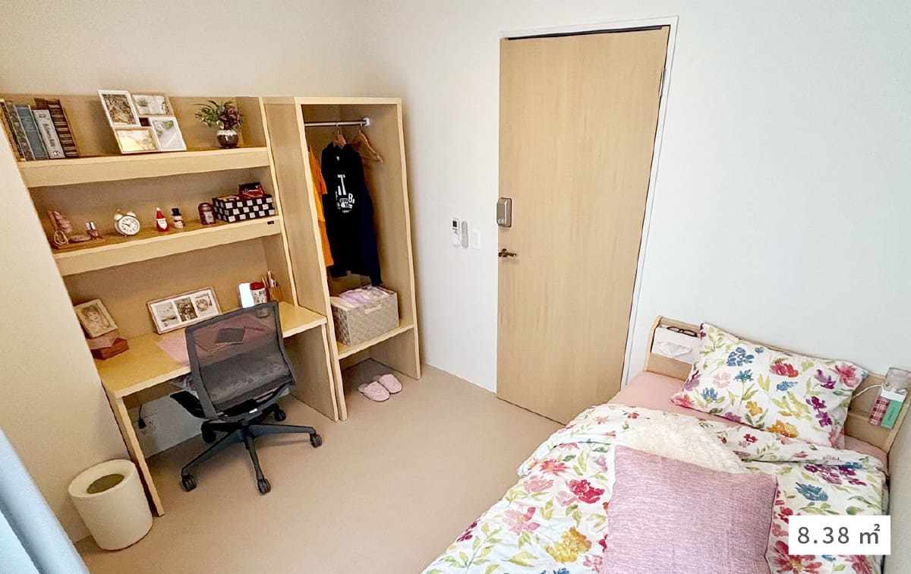
初年度の発見をさらに深化。なぜ建物ごとに文化が異なるのか、その根本に迫る。
初年度と同一の質問項目で追跡調査を実施。態度変化の時系列パターンを捉える。
自己報告だけでなく、実際の行動データを測定。態度と行動の乖離も分析対象とする。
寮生同士の交流パターンを可視化し、建物を超えた社会的つながりの影響を検証。
マルチレベルモデルやベイズ推定を活用し、形成メカニズムをより精密にモデル化。
慶應SFCの学生で構成される研究チーム。
初年度の研究成果をまとめたプレプリント論文。153名の寮生データから、回答パターンの違いが性別ではなく建物という社会単位に紐づくことを示す。
OSF で読む